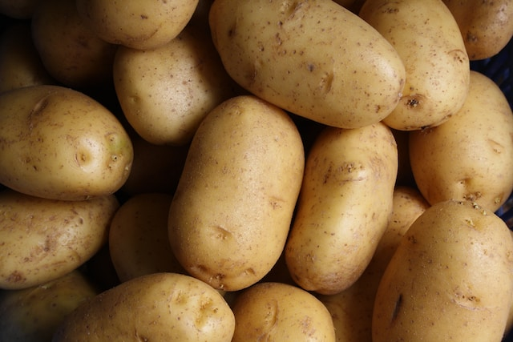

Creamy Mashed Potatoes Recipe

Description
These creamy, cheesy mashed potatoes taste great without gravy or garlic, and make a great side dish for any meal.
Ingredients
- 3 large potatoes
- 1 cup heavy cream
- 2 tbsp butter
- 1 slice American cheese
Steps
- Skin the potatoes with a peeler.
- Chop the potatoes into smaller pieces.
- Cover the potatoes with water.
- Bring pot to a boil and cook until potatoes fall apart.
- Dump most of the potato water.
- Add heavy cream, butter, and cheese to pot over low heat.
- Mash potatoes, adding additional cream and butter to taste.